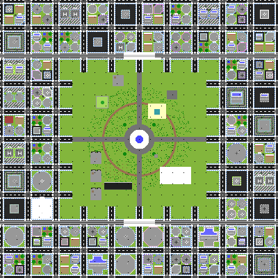
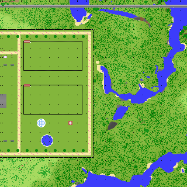
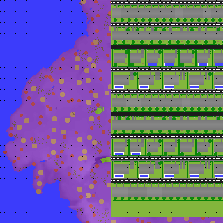
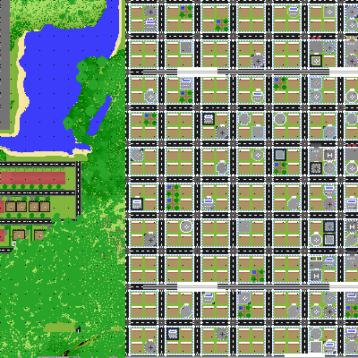

SkyPlane SMP
SkyPlane SMP | 15 cities · airliners · trains
Theme parks, malls & homes to buy · Java + Bedrock
Theme parks, malls & homes to buy · Java + Bedrock
?/30
checking…
A Minecraft city server where you can fly an airliner from London to Tokyo, take the bullet train home and spend the evening on a roller coaster.
SkyPlane SMP is one big world with fifteen cities based on real ones: Lion City, Tokyo, London, New York, Dubai and ten more. Each city has its own style of houses and landmarks, an airport, a metro, a mall and a theme park. There's plain Minecraft countryside between them, so you can still go off and build a base in the Wild.
You get a free flat in Lion City when you first join. From there you can get a job, save up for a bigger place, open a shop in the mall, or learn to fly and start an airline with your friends. Planes, trains and cars all use the resource pack the server sends you, so you don't need any mods.
It works on Java and on Bedrock (phone, Xbox, Switch, PlayStation, Windows), and it's free.

/doorcode set 1234. Three wrong guesses set off an alarm and text you./menu puts everything in one place. There's also a sidebar showing your money and job (hide it with /hud), player warps and /rtp./skin, map art from images, chopping down whole trees and vein mining.


The cities sit on a 5 × 3 grid 16 km apart: about 10 minutes by bullet train or 5 to 6 minutes by airliner. Every city has at least one airport. You can also take a SkyAir hop from /menu if you don't want to fly yourself.
| City | Based on | Look out for |
|---|
/voice in game)/menu.skyplanesmp.trick-game.netBest on 26.3. Older versions can join too, but some models may look off.
/menu.51.79.163.19port 25821Planes and cars show up as simpler shapes on Bedrock, but everything still works.
Normal Minecraft works fine on SkyPlane SMP. If your computer can handle it, our installer sets up a separate "SkyPlane SMP" installation in the Minecraft Launcher with:
It doesn't touch your normal Minecraft or your other mods. You need about 6 GB of free memory and a graphics card from roughly the last six years.
Already have Fabric? Drop the client mod into your mods folder. It adds the C key for aircraft controls and tells the server you have better graphics.
These downloads are for playing on SkyPlane SMP only. Want the SkyPlane mods for your own server? Message gcrobbie on Discord.
Using Prism Launcher or the Modrinth App? Import the .mrpack file instead. Too slow? Turn shaders off under Options, Video Settings, Shader Packs.
You can do almost everything from /menu, but these shortcuts are handy.
| Command | What it does |
|---|